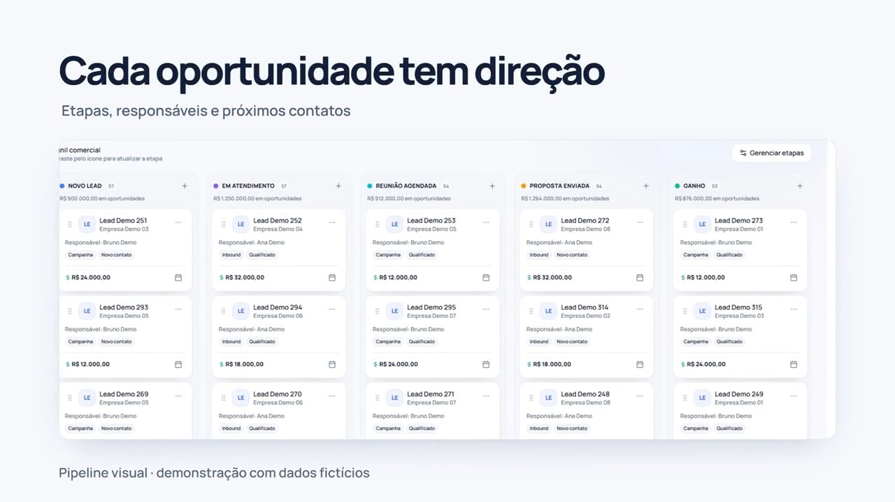

Produto próprio · Aplicação publicada
MVPLLK
Um CRM que reúne oportunidades, tarefas e indicadores de mídia em uma operação.
- Como foi feito
- React e TypeScript organizam o funil. No módulo de performance, funções do Supabase normalizam dados da Meta, e o Gemini analisa os indicadores e sugere próximos passos para revisão humana.